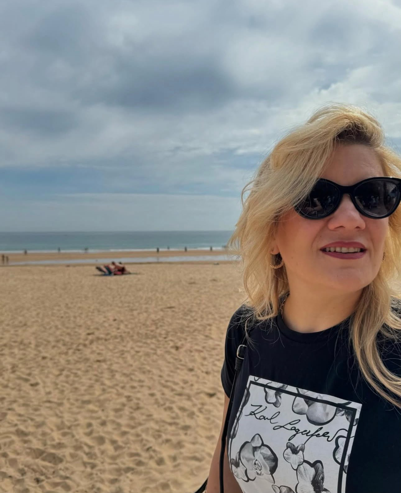
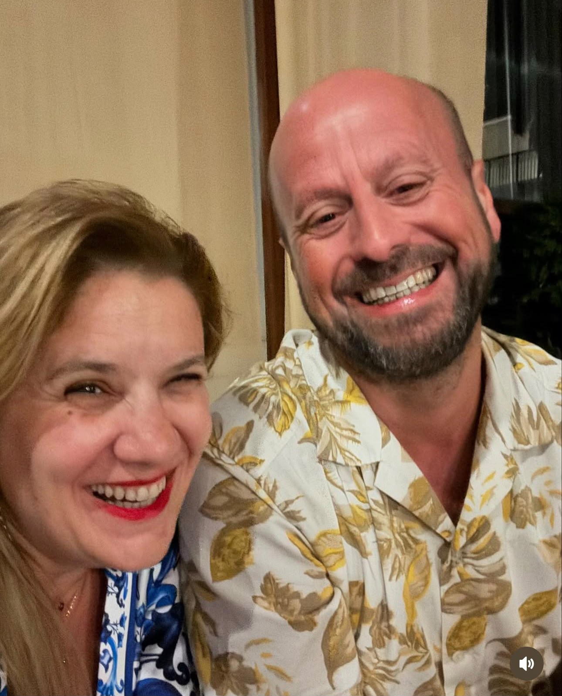
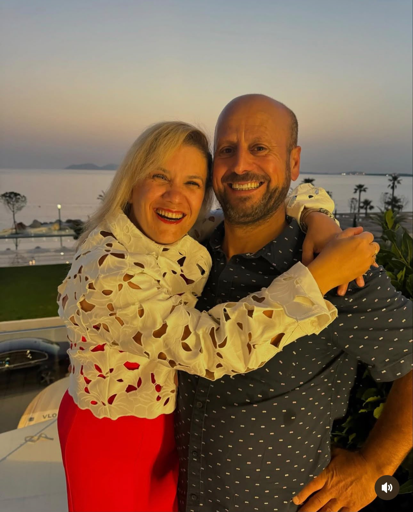
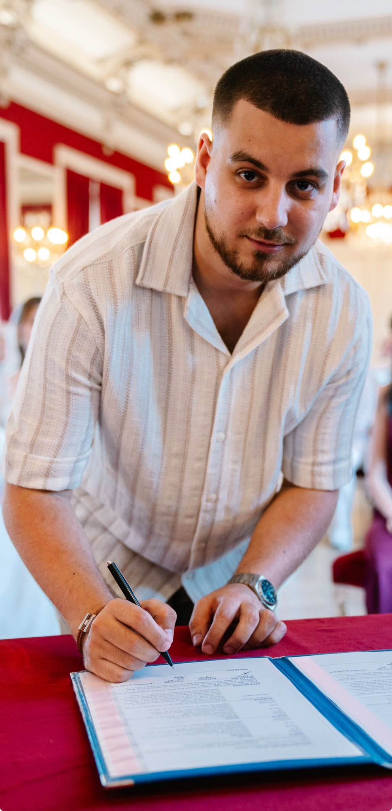
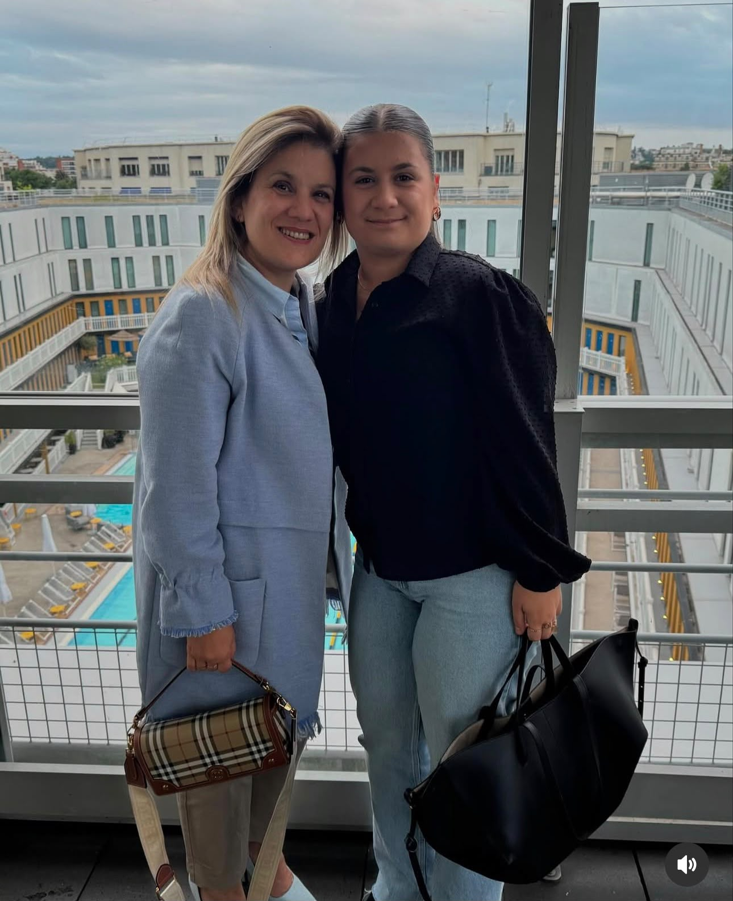
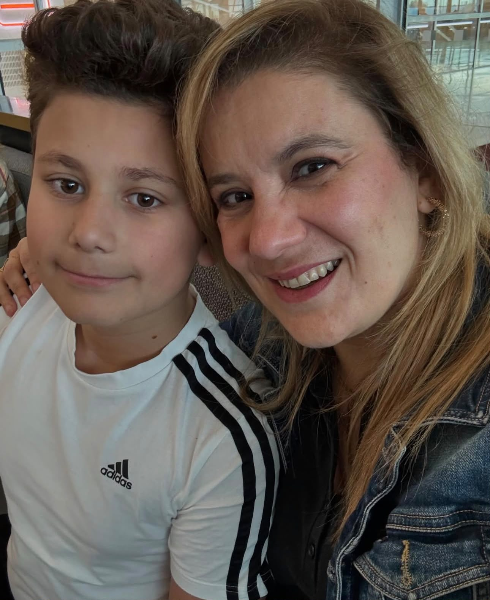
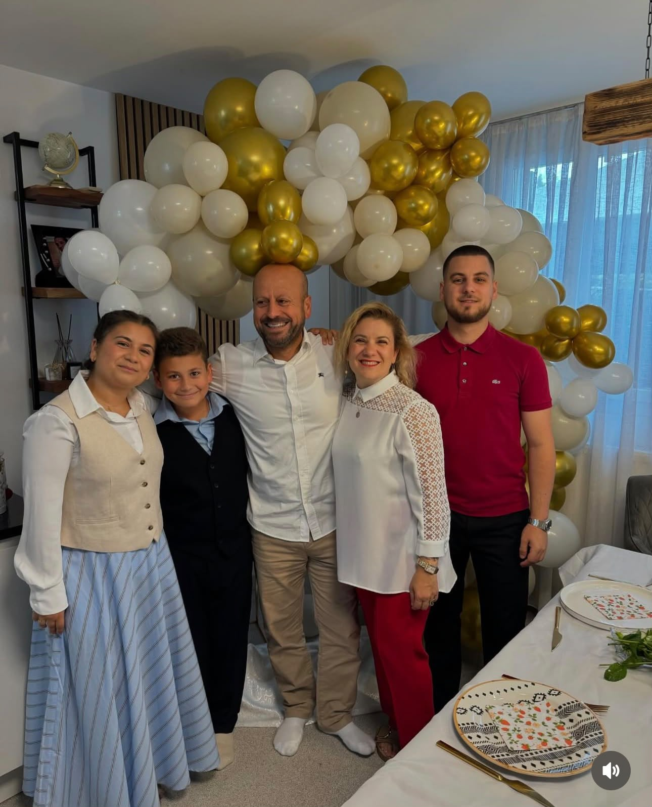
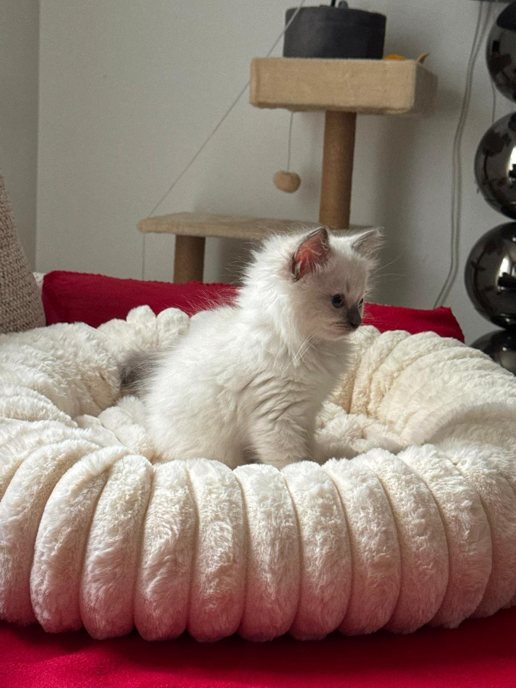
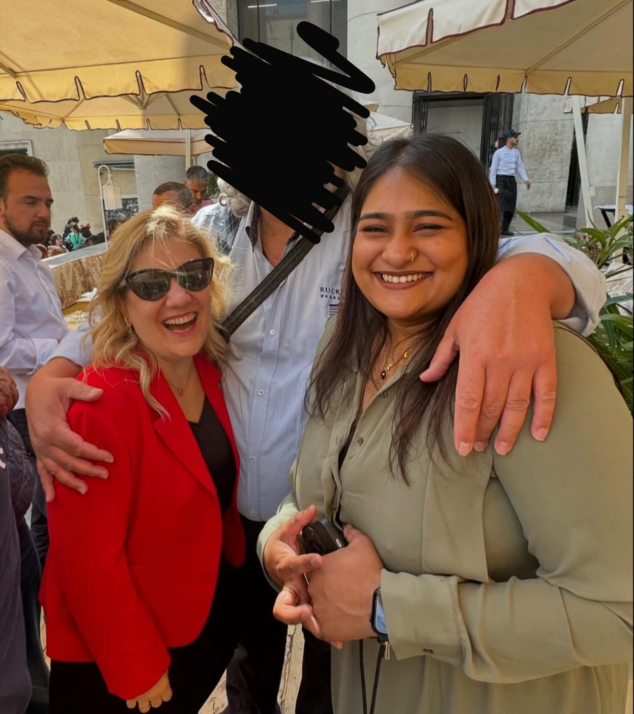
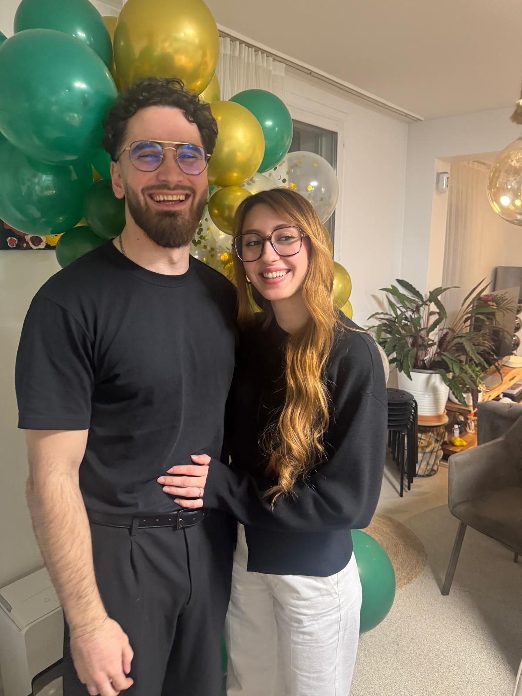

Bonjour, ce site a été fait par un ingénieur informaticien diplômé d'un master 2 incompétent
Dudu Celayir et ses choses préférées:

Son merveilleux mari, Niyazi Celayir, qui la fait toujours rire, mais dont il vaut mieux éviter sa colère (sinon, il risque de vous écraser avec sa voiture, il l'a fait pour moins que ça)


Hilmi Celayir, son premier fils, la prunelle de ses yeux, qui malheureusement ne met ses talents d'informaticien au service de sa maman. Elle serait encore plus heureuse s'il jouait un peu moins à la Playstation

Yelda Celayir, encore pire que sa maman ! La version Pro Max de Dudu Celayir. Très franche, elle dit tout ce qui lui passe par la tête, sans aucun filtre. Tout le monde ferait mieux de faire attention à elle ! Et surtout, c’est une grande fan du PSG !

Ismail Celayir, le plus beau, le plus intelligent, le polytechnicien !!!!

La famille Celayir au grand complet... Enfin presque ! Mais qui manque à l'appel ...?

Laya Celayir, officiellement le chat la plus chanceuse de la planète ! Franchement, on a tous raté notre vie : il fallait naître chat chez Dudu Celayir ! 👑 Princesse, reine, propriétaire des lieux… les humains sont juste là pour payer les factures et la servir. Un collier Hermès bientôt.

Sayani: le bras droit de Dudu

ses enfants adoptifs

le chat avec lequel on a amadoué Dudu pour adopter un chat